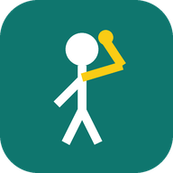

DETEC MOV
Instalar
Elige una cámara y presiona
Iniciar
⚠️ Se tocó la cabeza
Detenido
Cámara
Fuente
Cámara del equipo / Iriun Webcam
Cámara IP (stream MJPEG por HTTP)
Cámara IP (foto JPG por HTTP)
Dispositivo
Predeterminada
URL de la cámara
Ej.: app "IP Webcam" de Android →
http://IP:8080/video
(MJPEG) o
http://IP:8080/shot.jpg
(foto).
Iniciar
Detener
Detección
Sensibilidad (tamaño de la zona de la cabeza):
Tiempo mínimo de contacto:
Espera entre alertas:
Modelo de pose
Liviano (más rápido, celulares)
Completo (recomendado)
Pesado (mejor de lejos, más lento)
Contar también tocarse la cara (ojos, nariz, mejillas, boca, mentón)
Detectar también los dedos de la mano (más preciso de cerca)
Enviar foto con la alerta
Sonido en este equipo al detectar
Dibujar esqueleto
Espejar el video (como un espejo)
Telegram
Comprobando…
Enviar alerta de prueba
Buscar mi chat_id
Eventos
Instalar en iPhone / iPad
Abre esta página en
Safari
.
Toca el botón
Compartir
(cuadrado con flecha).
Elige
Agregar a pantalla de inicio
.
Entendido